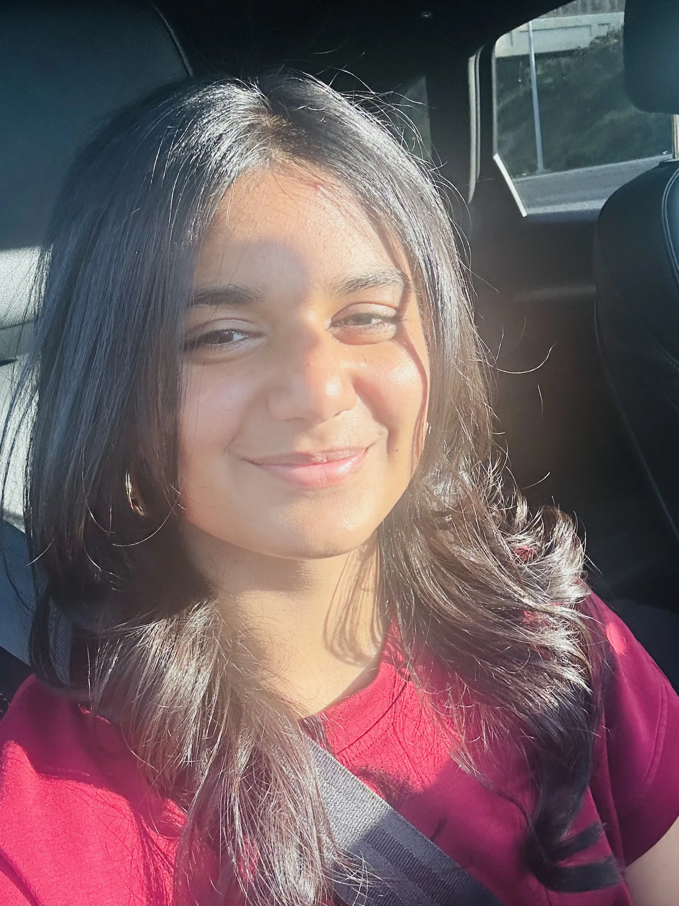
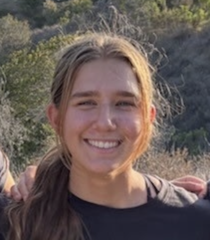
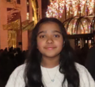
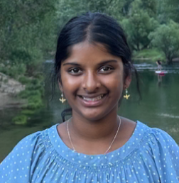
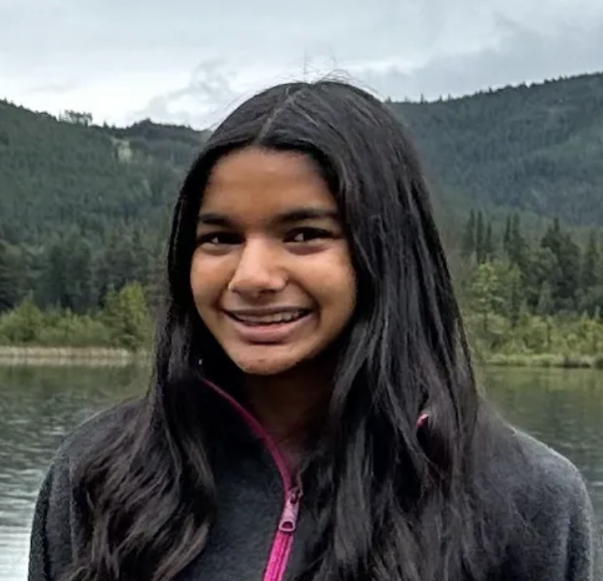
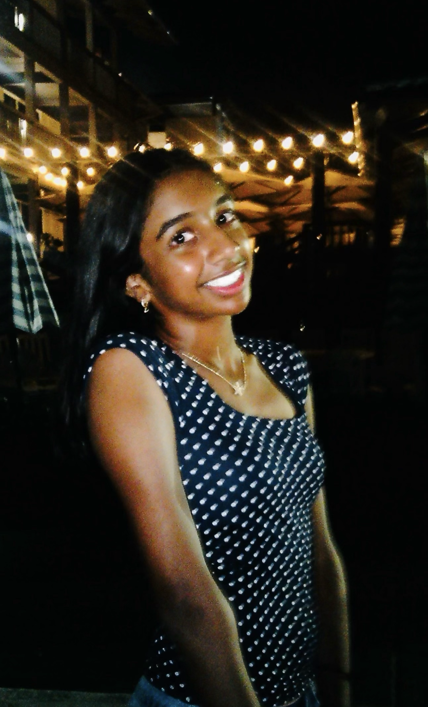

Music & Mind
The Acoustic Project (TAP) is a student-led initiative using music to explore the mind, foster connection, and create meaningful community impact.
0+
hours volunteered
0+
people reached
0+
community contributions
Who we are
A student-led initiative with a musical background and an interest in showcasing the bridge between music and the mind.
What we do
We perform live acoustic sets, host public awareness events, and curate a digital journal of musical memories shared directly by our community.
Have a song that means something to you?
Tell us the memory behind it. We may share it on Instagram or play it at a future set.
TAP Services
What TAP actually does in the community.
Performances
Recurring live acoustic performances to communities that support the mind and well-being across San Diego.
Initiatives
Awareness initiatives that use music to encourage conversations about brain health, memory, and wellbeing through outreach, musical experiences, and education.
TAP Talks
Interactive, accessible presentations on music and the brain delivered at libraries and community centers.
Dedications
Community members submit a song and the memory behind it. We showcase these moments to share what they mean to our community.
TAP Journal
Our journal exploring the intersection of music, neuroscience, and human experience: research insights and reflections on memory, emotion, and cognition.
Performances & Initiatives
Taking the science of sound directly into the community.
Our venues
We perform at local healthcare communities to bring recurring acoustic sets to patients and residents. Our current locations include:
ActivCare Senior Living, 4S Ranch
Community initiatives
Our awareness initiatives focus on using music as a platform to promote understanding of the connection between music, the brain, and overall wellbeing. These may include community-based musical experiences, outreach efforts, and opportunities to engage with the role music plays in memory, emotion, and human connection.
TAP Talks
Short presentations on music and the brain, delivered at libraries, community centers, and public events.
Topics we cover
- How music affects memory in Alzheimer's patients
- Music and Memory: How Songs Shape the Way We Remember
- The Brain's Reward System: Why Music Feels Good
Recent talks
The Sound of Emotion 4S Ranch Library · watch on YouTubeTAP Dedications
Submit a song and the memory behind it. We share these moments on our Instagram, and we may perform it at a future performance.
thank you ♪
Your dedication is on its way to us. Keep an eye on our Instagram.
Chapter Relations
As we grow, we are expanding our mission to different age groups and locations. Here are our current active chapters.
High School Chapter
Focused on exploring the connection between music, the mind, and community impact through leadership, education, and outreach.
- Healthcare Performances Bringing live acoustic sets to healthcare facilities to foster connection and well-being.
- Music & Brain Insights Exploring the relationship between music, neuroscience, and mental well-being.
- Community Outreach Initiatives that use music to create awareness, storytelling, and meaningful connections.
- Music & Mind Campaigns Educational content about how music influences emotions, memory, and cognition.
- Student Leadership Empowering students to lead projects and expand TAP's mission within their communities.
Middle School Chapter
Focused on music creation, storytelling, and community outreach for a younger age group.
- Sound Map Turning classmate feelings into acoustic pieces.
- Music & Experiments Exploring tempo, dynamics, and emotions.
- Mini Picture Books Song-inspired stories for hospital patients.
- Music & Mind Cards Calming cards with acoustic QR codes.
- Song of the Month A newsletter bridging art, story, and sound.
- Audio Series Live library performances and podcasts.
Interested in starting a chapter?
We look for musical passion, dedication to community outreach, and an interest in bridging cognitive science with sound. Email us at theacousticproject.sd@gmail.com
Our Theme & Mission
The Acoustic Project believes in the profound connection between music and the human mind.
Our work is about intentional connection. We believe in the power of music to unite communities, enrich well-being, and deepen our understanding of the human experience.
The team

Anika SeksariaFounder
Emily RinderknechtCo-Founder
Triya MuralikrishnanTAP Talk Lead
Ria KottaTAP Journal Lead
Maleesha WeerakkodyTAP Initiative Lead
Ridhi PatilTAP Media Lead